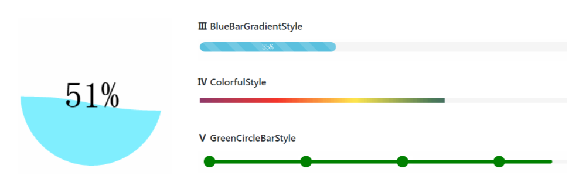
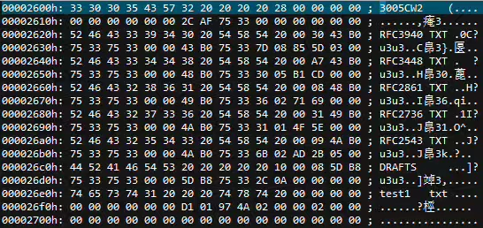
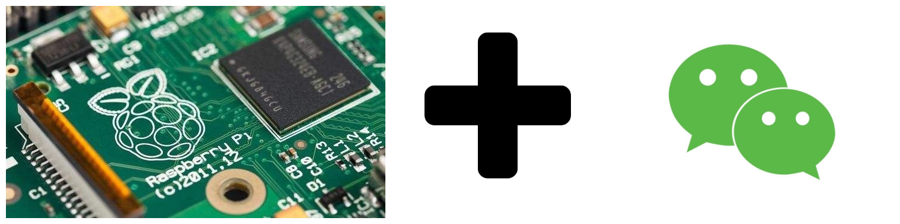
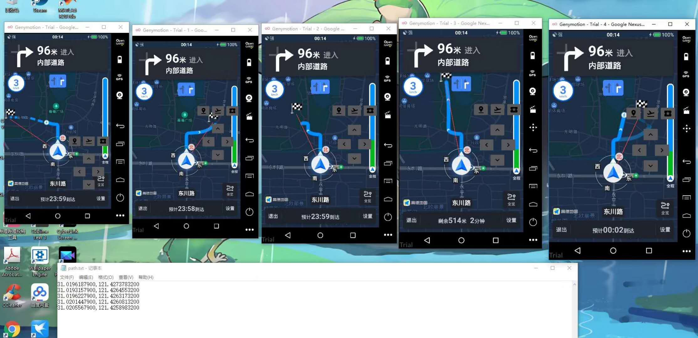

orcid.org/0000-0002-1306-9088
orcid.org/0000-0002-1306-9088-
- Education
 University of Electronic Science and Technology of China (UESTC)
University of Electronic Science and Technology of China (UESTC)-
September, 2014 - June, 2018
He received the B.E. degree in computer science and technology from UESTC, Chengdu, China, in 2018.
Shanghai Jiao Tong University (SJTU)
-
September, 2018 -
He is currently working toward the Master's degree in computer technology at SJTU, Shanghai, China. His research interests include crowdsensing, cybersecurity, mobile computing, Internet of things, blockchain, etc.
-
- Publications
-
Journal
[3] Junqin Huang, Linghe Kong*, Hong-Ning Dai, Weiping Ding, Long Cheng, Guihai Chen, Xi Jin, Peng Zeng. "Blockchain Based Mobile Crowd Sensing in Industrial Systems". IEEE Transactions on Industrial Informatics, accepted. [PDF]
[2] Junqin Huang, Linghe Kong*, Guihai Chen, Min-You Wu, Xue Liu, Peng Zeng. "Towards Secure Industrial IoT: Blockchain System with Credit-Based Consensus Mechanism". IEEE Transactions on Industrial Informatics, vol. 15, no. 6, pp. 3680-3689, June 2019. [PDF]
[1] LI Yue, HUANG Junqin, WANG Ruijin*. DCI control model of digital works based on blockchain[J]. Journal of Computer Applications, 2017, 37(11): 3281-3287. [PDF]
-
Conference
[3] Junqin Huang, Linghe Kong*, Guihai Chen, Long Cheng, Kaishun Wu, Xue Liu. "B-IoT: Blockchain Driven Internet of Things with Credit-Based Consensus Mechanism". IEEE ICDCS, Dallas, Texas, USA, 2019. [PDF] [Slides]
[2] Junqin Huang, Lingkun Kong, Linghe Kong*, Zhen Liu, Zhiqiang Liu and Guihai Chen. "Blockchain-based Crowd-sensing System". IEEE HotICN International Conference, 2018. [PDF] [Poster]
[1] L. Yue, H. Junqin, Q. Shengzhi and W. Ruijin*, "Big Data Model of Security Sharing Based on Blockchain", 2017 3rd International Conference on Big Data Computing and Communications (BIGCOM), 2017. [PDF]
-
Book Chapter
[1] Junqin Huang, Linghe Kong*, Guihai Chen. "Outlier Discrimination and Correction in Intelligent Transportation Systems". Smart Cities Cybersecurity and Privacy, Elsevier, 2019. [PDF]
-
- Projects
-
ProgressBar source code
Several awesome progress bar styles implemented in CSS3 & JavaScript.
 -
FAT12 source code
A fat12 file system implemented in C.
 -
musicBox source code
A simple VOD platform based on the Raspberry Pi and WeChat.
 -
paperchain source code live demo
Decentralized App (DApp) and smart contracts for paper copyright protection and implemented on Ethereum blockchain, which is an exploration of digital work copyright protection.
-
FakeGPS source code
FakeGPS is a GPS device simulator. GPS location signal keep output according to the given coordinates. By the direction keys on the joystick, the user can simulate walking on the map.
 -
BlockSense source code watch video
Motivated by constructing a crowd-sensing system with security and low service fee, we propose a blockchain-based crowd-sensing system (BlockSense), which replaces the traditional triangle architecture by the decentralized blockchain system.
-
- Services
-
TPC Members for International Conferences
☞ IEEE 91st Vehicular Technology Conference (VTC 2020-Spring), Antwerp, 2020
-
Teaching Assistant
☞ [CS154] Programming Design Ideas and Methods (C++), Fall 2019
-
- Award and Honor
-
Award
☞ National Graduate Scholarship, 2019
☞ First prize of National Universities and Colleges Blockchain Contest, 2018
☞ First prize of National College Student Information Security Contest, 2017
-
Honor
☞ Outstanding Undergraduate in UESTC, 2017
Junqin Huang
黄俊钦
-
- Blog
- https://blog.huangjunqin.com
-
- Email
- junqin.huang [AT] qq.com
-
- GitHub
- https://github.com/imtypist
-
- ORCID
-
- Google Scholar
-
- Organization

-
- ShareLatex
-
- Jupyter Notebook